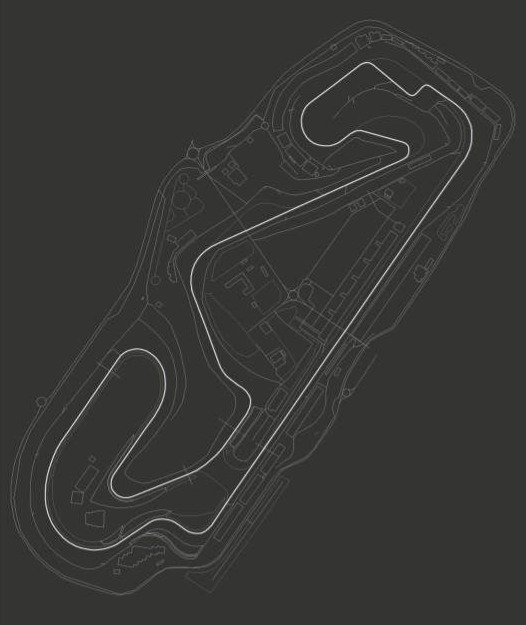
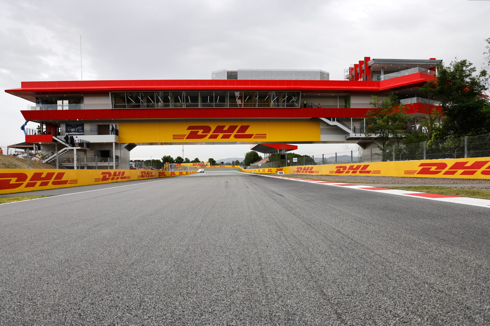
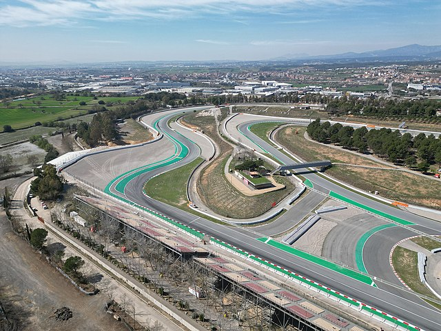

Nombre: Circuit de Barcelona-Catalunya
Longitud: 4655 m
Anchura Media: 14 m
Fecha: 2025-05-03
Hora de Inicio: 14:00
Vueltas: 66
Localidad: Montmeló
País: España
Nombre: Monster Energy
Referencia 1: https://www.circuitcat.com/
Referencia 2: https://es.wikipedia.org/wiki/Circuit_de_Barcelona-Catalunya
Referencia 3: https://www.motogp.com/es/circuits/Barcelona-Catalunya



Vencedor: Marc Márquez
Tiempo: 1:38:22.345
Piloto 1: Fabio Quartararo
Piloto 2: Francesco Bagnaia
Piloto 3: Marc Márquez